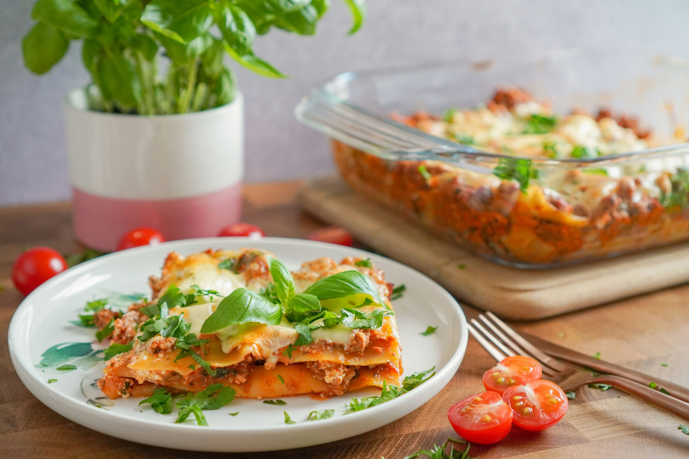

Lasagma

Description
Lasagna is a classic Italian comfort dish made with layers of wide pasta sheets, rich meat or vegetable sauce, creamy béchamel or ricotta cheese, and melted mozzarella. Each layer is carefully stacked
and baked until the flavors blend together
into a hearty, satisfying meal with a golden,
bubbling top.
This dish is known for its rich,
savory taste and soft, layered
texture. Traditionally
prepared with a slow-cooked tomato and
meat sauce, lasagna can also be
adapted with vegetables, chicken,
or even seafood. It’s a popular choice
for family dinners and gatherings
because it’s both filling and full
of flavor.
Ingredients
- Lasagna sheets (pasta)
- Ground beef (or chicken for variation)
- Onion (finely chopped)
- Garlic (minced)
- Tomato sauce or crushed tomatoes
- Tomato paste
- Tomato sauce or crushed tomatoes
- Olive oil
- Salt and black pepper
- Dried herbs (such as oregano and basil)
- Red chili flakes (optional)
Steps
- Prepare the meat sauce
Heat olive oil in a pan, then sauté chopped onions and garlic until soft. Add ground meat and cook until browned. Stir in tomato sauce, tomato paste, salt, pepper, and herbs. Let it simmer for 15–20 minutes.
- Make the white sauce (optional)
In another pan, melt butter, add flour, and cook for a minute. Slowly add milk while stirring to avoid lumps. Cook until the sauce thickens.
- Prepare the cheese mixture
In a bowl, mix ricotta (or cottage cheese) with an egg and a little salt and pepper.
- Boil the lasagna sheets
Cook the pasta sheets according to package instructions, then drain and set aside.
- Assemble the layers
In a baking dish, spread a thin layer of meat sauce. Add a layer of lasagna sheets, then meat sauce, then cheese mixture, and a bit of white sauce. Repeat the layers.
- Top with cheese
Finish with a final layer of pasta, sauce, and a generous amount of mozzarella and Parmesan cheese on top.
- Bake the lasagna
Bake in a preheated oven at 180°C (350°F) for about 30–40 minutes, until the top is golden and bubbly.
- Let it rest and serve
Allow the lasagna to cool for 10–15 minutes before cutting. Serve warm and enjoy!
Home